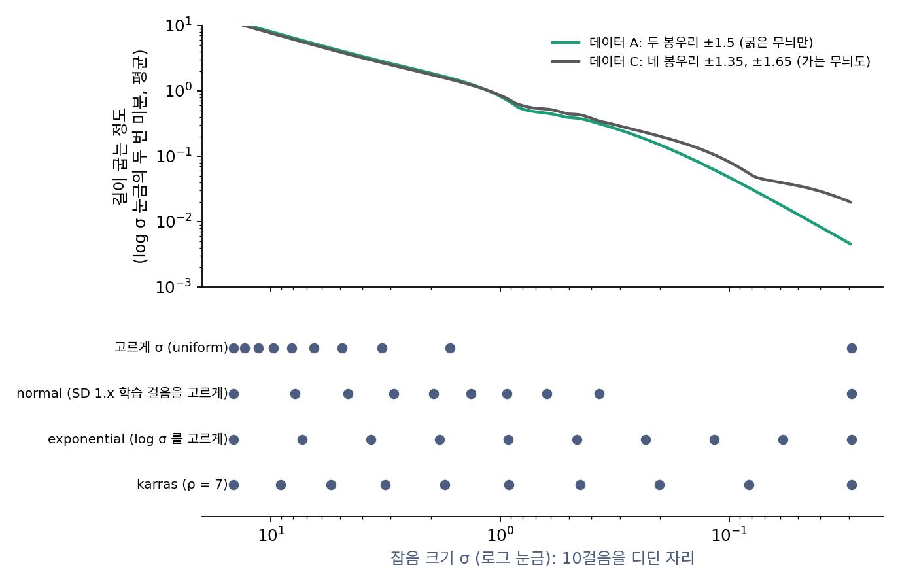

걸음 일정: 걸음을 어느 잡음 크기에 디딜까
지금까지는 잡음 크기를 같은 비율로 줄여 가며 걸음을 디뎠다. 그런데 ComfyUI 의 걸음 일정 칸에는 normal, karras, exponential, simple, beta 같은 이름이 아홉 개 있다. 같은 샘플러, 같은 20걸음이라도 이 칸을 바꾸면 그림이 달라진다. 잡음 크기는 0.0292에서 14.61까지 500배 넘게 걸쳐 있다. 이 범위의 어디에 걸음을 촘촘히 디뎌야 할까?
역사: 잘린 오차를 고르게 할 것인가
DDIM 이후 많은 구현은 학습 때 쓴 1000개의 걸음 번호를 고르게 솎아 생성 걸음을 골랐다(ComfyUI 의 normal, ddim_uniform 일정이 이 방식이다). 걸음 번호가 고르다고 잡음 크기가 고르지는 않다. 카라스와 동료들(2022)은 걸음 일정을 따로 떼어 따졌다. 그들은 걸음마다 생기는 잘린 오차(그 걸음을 곧게 간 탓에 생긴 오차)가 길이 휘는 정도에 비례한다고 보고, 가장 큰 잡음과 가장 작은 잡음 사이를 1/ρ제곱한 눈금에서 고르게 나누는 일정을 냈다. 그들의 분석에서 ρ = 3이면 걸음마다의 잘린 오차가 거의 같아진다. 그런데 그림을 실제로 뽑아 보면 ρ가 5~10일 때가 훨씬 나았고, 논문은 이를 「작은 잡음 근처의 오차가 큰 영향을 준다」는 뜻으로 읽고 ρ = 7을 썼다. 오차를 고르게 나누는 일정보다, 작은 잡음 쪽에 걸음을 더 몰아 주는 일정이 그림에는 나았다는 것이다.
길이 휘는 곳에 걸음을 몰기
카라스 일정은 다음과 같다.
어느 일정이 좋은지는 길이 어디서 휘느냐에 달려 있다. 두 데이터로 견준다. 데이터 A는 지금까지의 두 봉우리 ±1.5(폭 0.3)이고, 데이터 C는 그 봉우리가 다시 둘로 갈라진 네 봉우리 ±1.35, ±1.65(폭 0.05)다. C는 A의 굵은 무늬 위에 0.3 간격의 가는 무늬를 더 가진다. 잡음은 가는 무늬부터 덮으므로, 생성 길은 잡음 크기가 무늬의 크기만큼 줄어든 곳에서 그 무늬를 고르며 휜다. A는 잡음 크기 1 근처에서 어느 봉우리로 갈지 고르고 나면 길이 거의 펴지지만, C는 잡음 크기 0.1 근처에서 가는 무늬를 고르느라 한 번 더 휜다.
| 일정 (오일러 10걸음) | 데이터 A | 데이터 C |
|---|---|---|
| uniform (σ를 고르게) | 0.557 | 0.458 |
| normal (SD 1.x 학습 걸음 번호를 고르게) | 0.066 | 0.062 |
| exponential (log σ를 고르게) | 0.121 | 0.051 |
| karras (ρ = 7) | 0.113 | 0.047 |
값은 정확한 길의 끝과의 평균 거리다. 20걸음이면 A에서 0.179, 0.036, 0.056, 0.052, C에서 0.145, 0.042, 0.023, 0.021이다. 굵은 무늬만 있는 A에서는 잡음 크기 0.4~3 사이에 걸음을 많이 두는 normal이 가장 낫고, 가는 무늬가 있는 C에서는 작은 잡음 쪽까지 걸음을 두는 karras와 exponential이 낫다. 진짜 그림에는 아주 가는 무늬(머리카락, 질감)까지 있으니, 카라스 논문이 그림에서 작은 잡음 쪽을 중요하게 본 것과 맞는다. 이렇게 샘플러가 걸음을 디딜 잡음 크기의 목록을 정한 것을 걸음 일정 (샘플러가 걸음을 디딜 잡음 크기의 목록 / sampling schedule. ComfyUI 의 scheduler)이라 한다. 학습 때 시간마다 얼마나 섞을지 정한 잡음 일정과는 다른 것이다. 같은 잡음 일정으로 학습한 모델을 여러 걸음 일정으로 걸을 수 있다.

ML에서: 플로우 모델의 시간 밀기
직선 경로로 학습한 플로우 매칭 모델에서는 시간 t가 1(잡음)에서 0(데이터)으로 가는데, 걸음을 고르게 디디지 않고 밀어서 디딘다. Stable Diffusion 3 논문(에서와 동료들, 2024)은 「해상도가 높으면 픽셀이 많아 신호를 덮는 데 잡음이 더 필요하다」는 생각에서 시간을 t′ = mt/(1 + (m − 1)t)로 미는 방법을 냈다. 1024 × 1024에서 사람들에게 그림을 견주게 한 결과 밀기 배율이 1.5보다 큰 쪽이 뚜렷이 선호되었고, 학습과 생성 모두 m = 3을 썼다. ComfyUI 의 모델 설정(comfy/supported_models.py)에도 SD3와 Z-Image 의 shift 가 3.0으로 적혀 있다. FLUX는 같은 생각의 다른 식(flux_time_shift)을 쓴다.
문제 12. 카메라 셔터의 단계
카메라 셔터 속도를 1/1000초에서 1초까지 10단계로 고를 수 있게 하려 한다. (가) 시간을 고르게 나누면 어떤 값들이 되는가? (나) 앞 단계의 일정한 배수가 되게 나누면? (다) 어두운 밤에서 밝은 대낮까지 찍는 사람에게 어느 쪽이 쓸모 있는가?

(가)는 0.001, 0.112, 0.223, …, 0.889, 1초예요. 깔끔하네요.

밝은 낮에 흔히 쓰는 1/500초나 1/250초는 그 목록 어디에 있어요?

0.001 다음이 바로 0.112라서… 없어요. 그 사이 백 배 넘는 범위가 통째로 비었네요.

(나)는 9번 곱해서 1000배가 되어야 하니까 한 단계가 1000^(1/9) = 2.154배야. 0.001, 0.0022, 0.0046, 0.01, 0.0215, 0.0464, 0.1, 0.215, 0.464, 1초. 실제 카메라도 한 단계에 두 배씩이잖아. 빛의 양은 몇 배로 다른지가 중요하니까.

잡음 크기도 0.029에서 14.61까지 500배를 넘게 걸쳐 있어요. 고르게 나누면 작은 잡음 쪽이 통째로 비어요.
로그 눈금 그래프를 처음 배울 때, 지진 규모나 소리 크기를 왜 로그로 재는지 배운 것과 같은 이야기네요.
문제 13. 로를 바꾸면
가장 큰 잡음 14.61, 가장 작은 잡음 0.0292에서 카라스 일정으로 5걸음을 디딘다. (가) ρ = 1, 3, 7일 때 다섯 잡음 크기를 구하라. (나) ρ를 아주 크게(예: 1000) 하면 어떤 일정에 다가가는가? 그 까닭을 식으로 보여라. (위젯 4의 「문제 13 불러오기」에서 ρ를 바꿔 확인해 보자.)
ρ = 1이면 14.61, 10.97, 7.32, 3.68, 0.029로 고르게요. ρ = 3이면 14.61, 6.97, 2.61, 0.597, 0.029, ρ = 7이면 14.61, 4.80, 1.27, 0.248, 0.029예요. ρ가 클수록 작은 쪽으로 몰려요. 그러면 ρ를 끝없이 키우면 모든 걸음이 0.029에 붙겠네요?

1000으로 해 봤는데 14.61, 3.10, 0.656, 0.139, 0.029야. 안 붙어. 오히려 어디서 본 숫자 같은데.
같은 비율로 줄이는 일정, 곧 log σ를 고르게 나눈 일정의 다섯 값과 견주어 봐요.

14.61, 3.089, 0.653, 0.138, 0.029예요. 거의 같아요. ρ가 크면 σ1/ρ = e(log σ)/ρ ≈ 1 + (log σ)/ρ라서, 1/ρ제곱 눈금에서 고르게 나누는 게 log σ를 고르게 나누는 것과 같아져요. 카라스 일정은 σ를 고르게 하는 것(ρ = 1)과 log σ를 고르게 하는 것(ρ → ∞) 사이를 잇는 다이얼이네요.
ρ = 7은 그 사이에서 log 쪽에 꽤 가까운 자리고요. 성적 등급을 원점수로 자를지 백분위로 자를지 그 중간으로 자를지 고르는 것 같아요.
문제 14. 밀기 배율 3
플로우 매칭 모델이 시간 t = 1, 0.75, 0.5, 0.25에서 걸음을 디디려 한다. 밀기 배율 m = 3으로 t′ = 3t/(1 + 2t)를 쓰면 (가) 네 시간은 어디로 가는가? (나) 직선 경로 xt = (1 − t)x₀ + tε에서 그림 생성 도구가 쓰는 잡음 크기 눈금, 곧 신호로 나눈 잡음 크기 t/(1 − t)는 밀기 전과 뒤에 어떻게 달라지는가?
(가)는 1은 1, 0.75는 0.9, 0.5는 0.75, 0.25는 0.5예요. 다 1 쪽, 잡음 쪽으로 밀렸어요. 짙은 잡음에 걸음을 더 쓰는 거네요.
(나)는 밀기 전이 3, 1, 1/3이고 밀기 뒤가 9, 3, 1이야. 전부 정확히 세 배.
정확히 세 배인 게 우연일까요?
식으로 하면 t′/(1 − t′) = 3t/(1 + 2t) ÷ (1 − t)/(1 + 2t) = 3 · t/(1 − t)예요. 시간 밀기는 신호로 나눈 잡음 크기를 m배 하는 것과 같아요. 로그로 보면 log σ 눈금 전체를 log m만큼 옮기는 거고요.
그래서 「큰 그림에는 잡음이 더 필요하다」를 「같은 시간에 잡음 크기를 세 배로 보자」로 고친 거예요. 픽셀이 많으면 이웃 픽셀끼리 평균을 내어 잡음을 거를 수 있으니, 같은 잡음 크기라도 그림이 덜 가려져요.
해상도 높은 사진에서 잡티가 덜 보이는 거랑 같네요. 그래서 잡티를 더 뿌려야 같은 만큼 가려지고요.